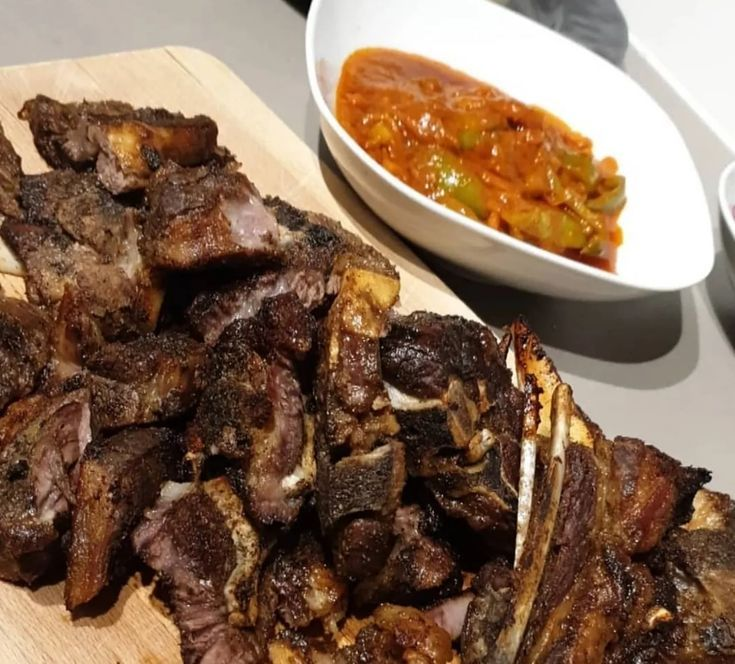
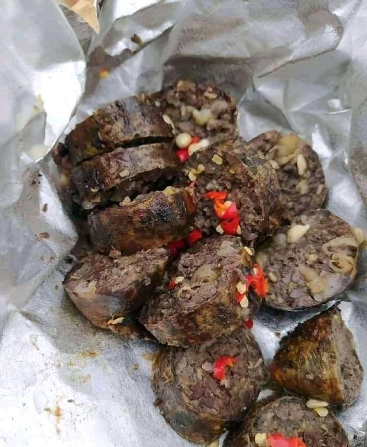
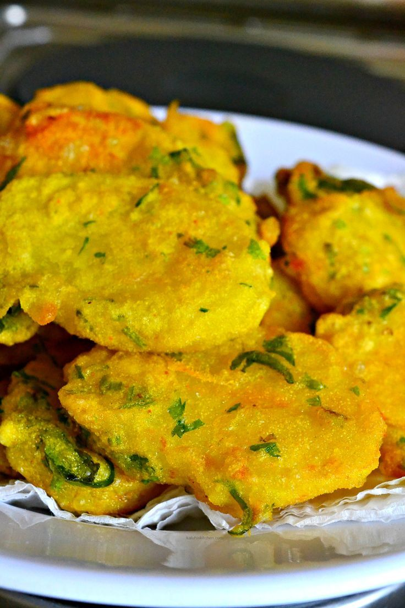
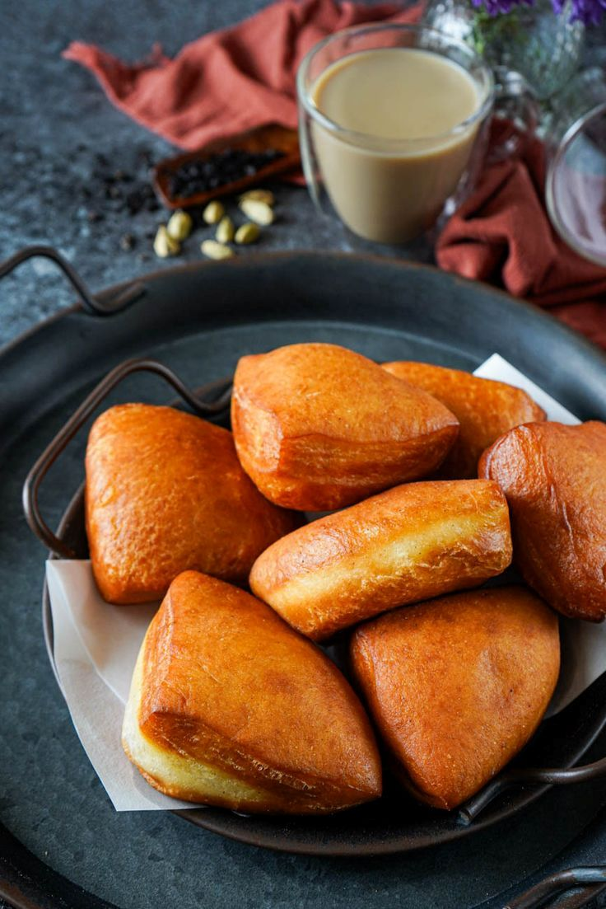

Top Rated Street Food Locations
Explore highly rated places in Kenya where you can enjoy authentic street food.

Carnivore Restaurant – Nairobi
Famous for expertly grilled nyama choma and a traditional Kenyan dining experience.
View on Google Maps
Kenya Cinema Mutura Vendors – Nairobi CBD
Popular late-night street vendors known for freshly grilled mutura.
View on Google Maps
Mama Oliech Restaurant – Nairobi
Known for traditional Kenyan dishes including delicious crispy bhajia.
View on Google Maps
Swahili Café – Mombasa
Highly rated for fresh mandazi and authentic Swahili tea snacks.
View on Google Maps